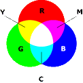

The color balance is adjusted by changing the mixture of red (R) green (G), and blue (B).
The color balance is adjusted by changing the mixture of black (K) cyan (C), magenta (M), and yellow (Y).
This function is available only for color printers.
The colors of the RGB color model can be mixed to produce the cyan, magenta, and yellow of the CMY color model and vice versa. Two colors of one model are mixed to produce the color of the other (mixing blue and green produces cyan, for example). The remaining color is the complement of the color produced (red in this example). Complementary colors are: red and cyan, green and magenta, blue and yellow.

Open the printing preferences dialog box.
Click the Print Quality:Standard menu on the Detailed Settings tab.
Select Advanced Settings for Adjust Image Quality/Color.
Click Details... button to open the Details dialog box and click Color Balance tab.
If you select Single Component for Setting Method, select the component you want to adjust from Text, Graphics, or Photograph.
Specify a value in the Brightness: spin box to adjust the brightness.
Specify a value in the Contrast: spin box to adjust the contrast.
Specify a value in the Saturation: spin box to adjust the saturation.
Specify a value in the spin box in the Adjust Each Color group to adjust the color balance of red (R), green (G), and blue (B).
Click OK to save the color balance and close the dialog box.
The following methods are available to make a specific color stronger: decreasing the color's complementary color or decreasing the other colors (that is, decreasing complementary colors relatively). A combination of both methods can be used. For example, to make red more vivid, make it stronger (by decreasing cyan) or decrease green and blue (making magenta and yellow stronger). The more red that is used, the brighter it looks. This is useful to adjust the colors of a dark image. Conversely, the less green and blue that are used, the duller the image looks. Use this method to make a bright image dull.